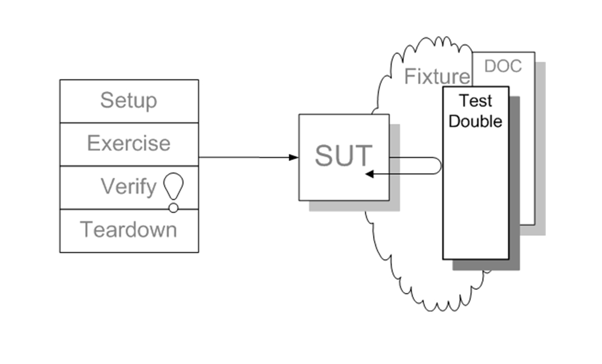

- 00 开篇词 为什么写测试是程序员的本职工作？.md.html
- 01 实战：实现一个 ToDo 的应用（上）.md.html
- 02 实战：实现一个 ToDo 的应用（下）.md.html
- 03 程序员的测试与测试人员的测试有什么不同？.md.html
- 04 自动化测试：为什么程序员做测试其实是有优势的？.md.html
- 05 一个好的自动化测试长什么样？.md.html
- 06 测试不好做，为什么会和设计有关系？.md.html
- 07 Mock 框架：怎么让测试变得可控？.md.html
- 08 单元测试应该怎么写？.md.html
- 09 测试覆盖率：如何找出没有测试到的代码？.md.html
- 10 为什么 100% 的测试覆盖率是可以做到的？.md.html
- 11 集成测试：单元测试可以解决所有问题吗？.md.html
- 12 实战：将 ToDo 应用扩展为一个 REST 服务.md.html
- 13 在 Spring 项目中如何进行单元测试？.md.html
- 14 在 Spring 项目如何进行集成测试？.md.html
- 15 测试应该怎么配比？.md.html
- 16 怎么在遗留系统上写测试？.md.html
- 17 TDD 就是先写测试后写代码吗？.md.html
- 18 BDD 是什么东西？.md.html
- 答疑解惑 那些东西怎么测？.md.html
- 结束语 对代码的信心要从测试里来.md.html
- 捐赠
07 Mock 框架：怎么让测试变得可控？
你好，我是郑晔！
上一讲，我们谈到测试不好测，关键是软件设计问题。一个好的设计可以把很多实现细节从业务代码中隔离出去。
之所以要隔离出去，一个重要的原因就是这些实现细节不那么可控。比如，如果我们依赖了数据库，就需要保证这个数据库环境同时只有一个测试在用。理论上这样不是不可能，但成本会非常高。再比如，如果依赖了第三方服务，那么我们就没法控制它给我们返回预期的值。这样一来，很多出错的场景，我们可能都没法测试。
所以，在测试里，我们不能依赖于这些好不容易隔离出去的细节。否则，测试就会变得不稳定，这也是很多团队测试难做的重要原因。不依赖于这些细节，那我们的测试总需要有一个实现出现在所需组件的位置上吧？或许你已经想到答案了，没错，这就是我们这一讲要讲的 Mock 框架。
从模式到框架
做测试，本质上就是在一个可控的环境下对被测系统/组件进行各种试探。拥有大量依赖于第三方代码，最大的问题就是不可控。
怎么把不可控变成可控？第一步自然是隔离，第二步就是用一个可控的组件代替不可控的组件。换言之，用一个假的组件代替真的组件。
这种用假组件代替真组件的做法，在测试中屡见不鲜，几乎成了标准的做法。但是，因为各种做法又有细微的差别，所以，如果你去了解这个具体做法会看到很多不同的名词，比如：Stub、Dummy、Fake、Spy、Mock 等等。实话说，你今天问我这些名词的差异，我也需要去查找相关的资料，不能给出一个立即的答复。它们之间确实存在差异，但差异几乎到了可以忽略不计的份上。
Gerard Meszaros 写过一本《xUnit Test Patterns》，他给这些名词起了一个统一的名字，形成了一个新的模式：Test Double（测试替身）。其基本结构如下图所示。

在这个图里，SUT 指的是被测系统（System Under Test），Test Double 就是与 SUT 进行交互的一个组件。有了我们之前的讲解，这个图应该不难看懂。
然而，这个名字也没有在业界得到足够广泛的传播，你更熟悉的说法应该是 Mock 对象。因为后来在这个模式广泛流行起来之前，Mock 框架先流行了起来。
Mock 框架
Mock 框架的基本逻辑很简单，创建一个模拟对象并设置它的行为，主要就是用什么样的参数调用时，给出怎样的反馈。虽然 Mock 框架本身的逻辑很简单，但前期也经过了很长一段时间的发展，什么东西可以 Mock 以及怎样去表现 Mock，不同的 Mock 框架给出了不同的答案。
今天我们的讨论就以 Mockito 这个框架作为我们讨论的基础，这也是目前 Java 社区最常用的 Mock 框架。
要学习 Mock 框架，必须要掌握它最核心的两个点：设置模拟对象与校验对象行为。
设置 Mock 对象
要设置一个模拟对象，首先要创建一个模拟对象。在实战中，我们已经见识过了。
TodoItemRepository repository = mock(TodoItemRepository.class);
接下来就是设置它的行为，下面是从实战中摘取的两个例子。
when(repository.findAll()).thenReturn(of(new TodoItem("foo")));
when(repository.save(any())).then(returnsFirstArg());
一个好程序库其 API 要有很强的表达性，像前面这两段代码，即便我不解释，看语句本身也知道它做了些什么。
模拟对象的设置核心就是两点：参数是什么样的以及对应的处理是什么样的。
参数设置其实是一个参数匹配的过程，核心要回答的问题就是判断给出的实参是否满足这里设置的条件。像上面代码中，save 的写法表示任意参数都可以，我们也可以设置它是特定的值，比如像下面这样。
when(repository.findByIndex(1)).thenReturn(new TodoItem("foo"));
其实它也是一个参数匹配的过程，只不过这里做了些省略，完整的写法应该是下面这样。
when(repository.findByIndex(eq(1))).thenReturn(new TodoItem("foo"));
如果你有更复杂的参数匹配过程，甚至可以自己去实现一个匹配过程。但我强烈建议你不要这么做，因为测试应该是简单的。一般来说，相等和任意参数这两种用法在大多数情况下已经够用了。
设置完参数，接下来，就是对应的处理。能够设置相应的处理，这是体现模拟对象可控的关键。前面的例子我们看到了如何设置相应的返回值，我们也可以抛出异常，模拟异常场景。
when(repository.save(any())).thenThrow(IllegalArgumentException.class);
同设置参数类似，相应的处理也可以写得很复杂，但我同样建议你不要这么做，原因也是一样的，测试要简单。知道怎样设置返回值，怎样抛出异常，已经足够大多数情况下使用了。
校验对象行为
模拟对象的另外一个重要行为是校验对象行为，就是知道一个方法有没有按照预期的方式调用。比如，我们可以预期 save 函数在执行过程中得到了调用。
verify(repository).save(any());
这只是校验了 save 方法得到了调用，我们还可以校验这个方法调用了多少次。
verify(repository, atLeast(3)).save(any());
同样，校验也有很多可以设置的参数，但我同样不建议你把它用得太复杂了，就连verify 本身我都建议你不要用得太多。
verify 用起来会给人一种安全感，所以，会让人有一种多用的倾向，但这是一种错觉。我在讲测试框架时说过，verify 其实是一种断言。断言意味着这是一个函数应该具备的行为，是一种行为上的约定。
一旦设置了 verify，实际上也就约束了函数的实现。但 verify 约束的对象又是底层的组件，是一种实现细节。换言之，过度使用 verify 造成的结果就是把一个函数的实现细节约定死了。
过度使用 verify，在写代码的时候，你会有一种成就感。但是，一旦涉及代码修改，整个人就不好了。因为实现细节被 verify 锁定死，一旦修改代码，这些 verify 就很容易造成测试无法通过。
测试应该测试的是接口行为，而不是内部实现。所以，verify 虽好，还是建议少用。如果有一些场景不用 verify 就没有什么可断言的了，那该用 verify 还是要用。
如果按照测试模式来说，设置 Mock 对象的行为应该算是 Stub，而校验对象行为的做法，才是 Mock。如果按照模式的说法，我们应该常用 Stub，少用 Mock。
Mock 框架的延伸
Mock 框架的主要作用是模拟对象的行为，但作为一种软件设计思想，它却有着更大的影响。既然我们可以模拟对象行为，那本质上来说，我们也可以模拟其它东西。所以，后面也有一些基于这种模拟思想的框架，其中，目前行业中使用最为广泛的是模拟服务器。
模拟服务器顾名思义，它模拟的是服务器行为，现在在行业中广泛使用的模拟服务器主要是 HTTP 模拟服务器。HTTP 服务器的主要行为就是收到一个请求之后，给出一个应答，从行为上说，这与对象接受一系列参数，给出相应的处理如出一辙。
接下来我就以 Moco 为例，简单介绍一下模拟服务器。Moco 是我自己编写的一个开源模拟服务器程序库，曾在 2013 年获得 Oracle 的 Duke 选择奖。（在《软件设计之美》中讲到程序库的设计时，我讲过 Moco 整个设计的来龙去脉。如果你有兴趣，可以去回顾一下。）
下面是一个使用了 Moco 的测试代码。
public void should_return_expected_response() {
// 设置模拟服务器的信息
// 设置服务器访问的端口
HttpServer server = httpServer(12306);
// 访问/foo 这个 URI 时，返回 bar
server.request(by(uri("/foo"))).response("bar");
// 开始执行测试
running(server, () -> {
// 这里用了 Apache HTTP库访问模拟服务器，实际上，可以使用你的真实项目
Content content = Request.Get("http://localhost:12306/foo")
.execute()
.returnContent();
// 对结果进行断言
assertThat(content.asString(), is("bar"));
});
}
在这段代码里，我们启动了一个 HTTP 服务器，当你访问 /foo 这个 URI 时，它会给你返回一个应答 bar。这其中最关键的一行代码就是设置请求应答的那行。
server.request(by(uri("/foo"))).response("bar");
Moco 的 API 本身也有很强的表达性，通过代码本身你就能看到，这里就是设置了一个请求以及相应的应答。
Moco 的配置支持很多的 HTTP 元素，像下面这段代码，你可以同时匹配请求内容和 URI，也可以同时设置应答文本和 HTTP 的状态码。
server
.request(and(by("foo"), by(uri("/foo"))))
.response(and(with(text("bar")), status(200)));
在上面的例子里面，running 是负责模拟服务器启停的代码，里面包含的代码就是，通过自己真实的服务代码发出的真实请求。
Moco 还支持 verify，如果你想像 Mock 框架那样去校验服务器是否收到了相应的请求，就可以使用它。
RequestHit hit = requestHit();
final HttpServer server = httpServer(port(), hit);
running(server, () -> {
...
})
hit.verify(by(uri("/foo")), times(1));
虽然 Moco 支持这样的能力，但同使用 Mock 框架类似，我也建议你少用 verify。
Moco 最大的价值就是让原本不可控的第三方 HTTP 服务器，现在可以按照我们预期的方式执行。比如，在真实的集成过程，你很难要求第三方服务器给你一个错误的应答，或者一个超时的应答，但使用 Moco 你就可以让它模拟出这样的行为。
Moco 还有一个很大的价值，原本你要做集成，唯一的选项是把整个系统跑起来，基本上就到了系统集成的范畴。而现在使用 Moco，验证工作可以用集成测试的代码就可以完成。作为程序员我们很清楚，相比于系统测试，这种做法轻太多了，一旦出现问题，定位起来也容易很多。从开发效率上看，这简直是数量级的提升。
Moco 不仅仅支持模拟 HTTP 服务器，还做了进一步延伸，支持模拟 WebSocket 服务器。
HttpServer server = httpServer(12306);
webSocketServer = server.websocket("/ws");
webSocketServer.request(by("foo")).response("bar");
无论是模拟 HTTP 服务器，还是模拟 WebSocket 服务器，本质上来说，它都是模拟对象这一思想的延伸。而所有这一切的出发点都是，我们希望在测试中得到一个可控的环境。
总结时刻
今天我们主要讲了 Mock 框架。Mock 框架是源自 Test Double（测试替身）这种测试模式。我们希望自己有一个可控的环境对被测系统/组件进行测试，背后的思想就是用假的却可控的组件去代替真实不可控的组件。
现在 Mock 框架已经成为了测试的重要组成部分，理解一个Mock框架核心就是要理解如何设置对象行为以及如何校验对象行为。设置对象行为主要是设置相应的参数以及对应的处理，无论这个处理是给出返回值，还是抛出异常。校验对象行为是一种断言，是看对象是否按照预期方式执行。不过，我给你提了一个醒，verify 虽好，尽量少用。
最后，我们还以 Moco 为例讲到了 Mock 框架的延伸，也就是模拟服务器。Moco 主要是模拟 HTTP 服务器，其核心就是对什么样的请求，给出什么样的应答。
如果今天的内容你只能记住一件事，那请记住：使用 Mock 框架，少用 verify。
思考题
今天我们讲了 Mock 框架，你在实际工作中用到过 Mock 框架吗？它解决了你怎样的问题，或是你在使用它的过程中遇到怎样的困难，欢迎在留言区分享你的经验。
© 2019 - 2023 Liangliang Lee. Powered by gin and hexo-theme-book.